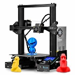

| basket | 3D printen | piano |
|  | ||
| ik basket bij BASKET MIDWEST. | Sinds een paar jaar ben ik bezig zelf dingen te ontwerpen met een 3D-printer. Als eindwerk in het secundair onderwijs heb ik een digitale pluviometer gemaakt. Hiervoor maak ik gebruik van een Creality ender 3. | Sinds mijn 8 jaar speel ik al piano.Een van de muziekstukken dat ik kan spelen is Yiruma - River Flows in You. |